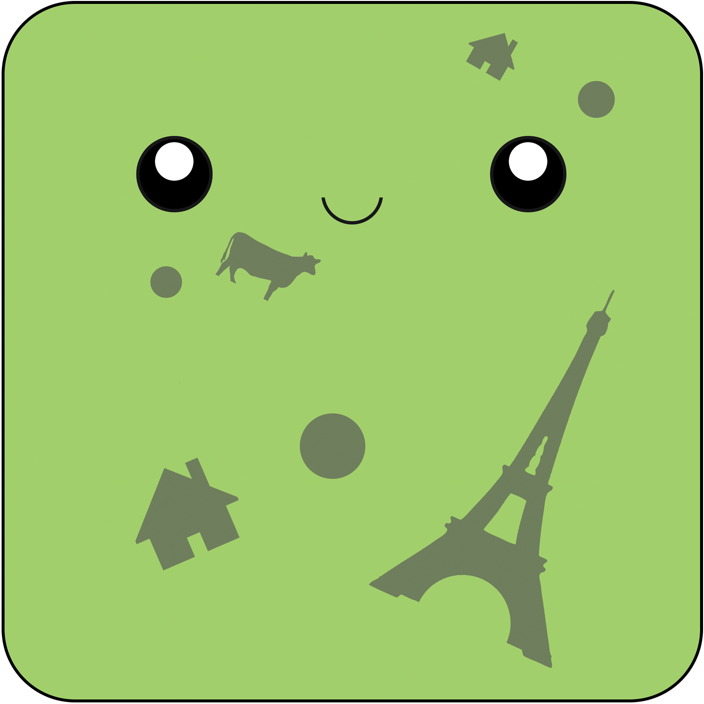
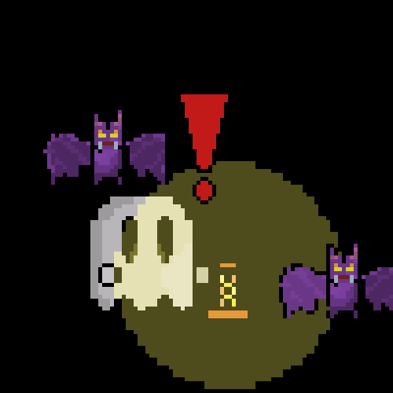
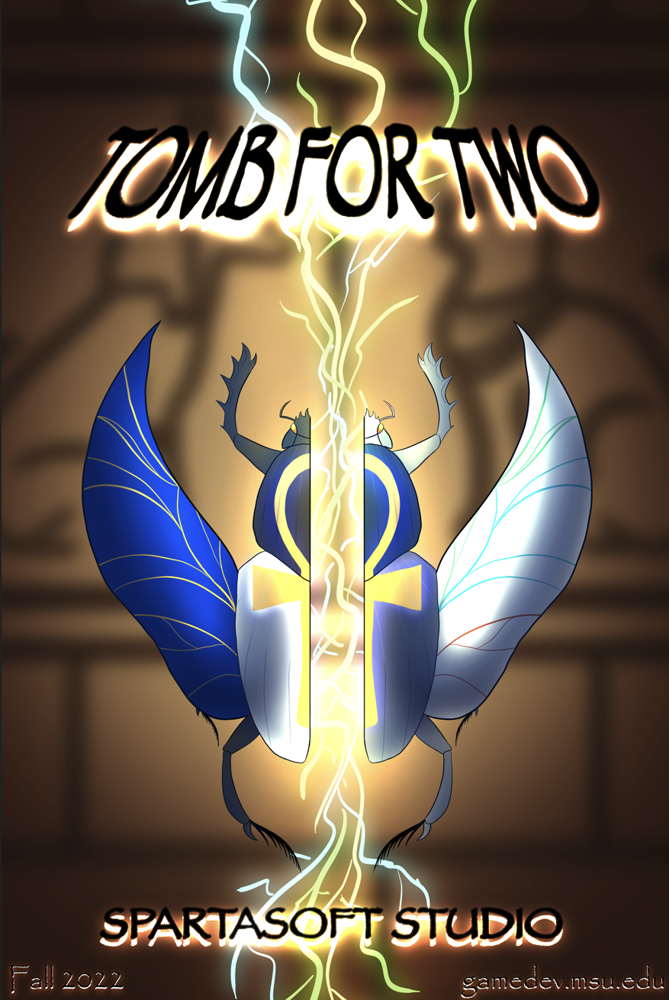

A slime goes to Vegas is a game about the lovable slime, Mitch!  In 1977 NASA launched photos and music into space in hopes of reaching extraterrestrial life. One of those photos included the beautiful Eiffel Tower. Mitch, a slime alien from a far away galaxy, hopes to meet the Tower in person. Mitch has never seen Earth before but hopes to spread its cheer to everything it touches. Equiped with a cheery smile, "say hi", to everything around you and get large enough to meet the Eiffel Tower! My role for this 3D game jam was designer and producer. I created each section though probuilder and progrids. After that I established a list of scripts, models, and UI art for the rest of the team to work on. I also had my hand in some programming for the UI.
The Tale of Radley is a 2d plaformer that utilizes Unity's lighting system.  In this game you follow our righteous hero Radley. His objective is to investigate the haunting mansion and defeat the creature haunting it. This was a game developed in CAS 117 at MSU. All the scripts and most of the assests were provided by the instructor. My modifications to the game was creating new art for everything except for the pick ups and base enemies. I did add a new enemy with its own animation, plus 3 new sound tracks. The lighting system was used through the URP, and creating 3 different levels that restricted sight gave me perspective on how to use lighting to guide the player through a stage. This game offers 3 unique stages and a final chase sequence at the end of the 3rd stage.
Tomb For Two is a game produced by SpartaSoft Studio!  Play as Anubis and Bastet in this two player coop dungeon. Fight off enemies and proceed through the rooms to find the end. Once each player gets to the end of the stage, fight off the final wave of enemies and escape! In Tomb for two you are able to switch postions with the other player to complete different obstacles. I had the opurtunity to work on the art team and create lots of assests. Specifically I worked on the UI and Skybox. I created the art for buffs, potions, and key items. For the Skybox i used a six sided skybox with multiple variations. I also created parts for the main title and some buttons.